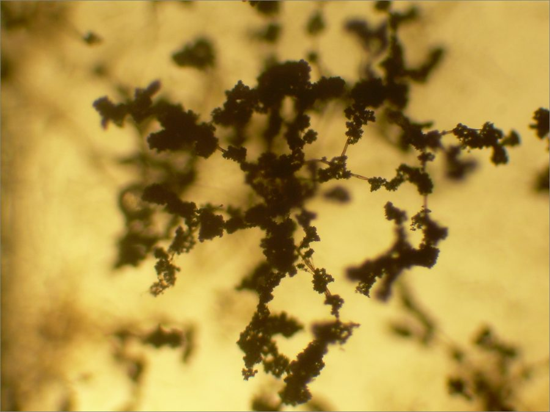

ट्राइकोडर्माTrichoderma
Trichoderma viride · Hypocreaceae · FNG-0026

- Scientific nameवैज्ञानिक नाम
- Trichoderma viride Pers.
- Familyकुल
- Hypocreaceae
- Hindiहिंदी
- ट्राइकोडर्मा
- Local namesस्थानीय नाम
- trichoderma, trikoderma, green mould
- Status hereयहाँ की स्थिति
- native
- Movementआवागमन
- Resident, here all year
- IUCNIUCN
- not evaluated
- Reviewसमीक्षा
- audited and independently read
When to look कब देखें
Present all year.साल भर मौजूद।
Uses and possibilities उपयोग और संभावनाएँ
Drawn from the documented uses in the profile below, where each is labelled traditional, current or a research lead. All uses →
Tell it apart from इनसे अलग पहचानें
ट्राइकोडर्मा / Trichoderma
Trichoderma viride Pers. — Hypocreaceae
ट्राइकोडर्मा — जमीन की एक हरी फफूँद जो मरी-गली लकड़ी और कूड़े को खा जाती है। यह अकेले में किसी को नुकसान नहीं करती, पर दूसरी बीमारियों की फफूँद को मार देती है। भारत में खेत के रोगों को नियंत्रित करने के लिए दवा के तौर पर इस्तेमाल हो रही है। बीज पर छिड़का जाए तो पौधे की जड़ें मजबूत होती हैं। खाद में मिलाई जाए तो खाद की गुणवत्ता बढ़ती है। पूर्वी उत्तर प्रदेश के हर तालाब, खेत और कूड़े के ढेर में यह फूलती है।
Quick Identification त्वरित पहचान
| Feature | Description |
|---|---|
| Colony colour | Bright green, olive-green or yellowish-green; distinctive colour |
| Growth rate | Fast-growing; covers culture plate in 5–7 days |
| Sporulation | Prolific spore production; green or yellow-green spore clouds |
| Smell | Distinctive musty, coconut-like odour |
| Substrate | Grows on straw, wood, soil, grain — highly ubiquitous |
| Texture | Powdery or felt-like colonies |
Field tip: Trichoderma is identified by bright green colour on any organic substrate. Any green mould growth on straw, wood, compost, or soil in fields or compost heaps is likely Trichoderma. The distinctive green colour and fast growth distinguish it from other soil fungi.
हिंदी: हरी फफूँद, जमीन में। कूड़े पर उगती है। गंध अलग होती है।
Morphology आकारिकी
Fungal structures (visible with microscope):
| Structure | Appearance |
|---|---|
| Mycelium | Hyaline (clear) to pale, branched; forms white basal mycelium beneath green spore layer |
| Conidiophore | Branched, tree-like; arises from mycelium; 30–100 µm tall |
| Conidium (spore) | Oval, elliptical or tear-drop shaped; 3–6 × 2–3 µm; bright green in mass; thousands produced per conidiophore |
| Chlamydospore | Thick-walled, round, 8–10 µm diameter; survival structure; produced in older colonies |
| Colour | Green due to carotenoid pigments in spore wall; pigment accumulation is diagnostic |
Culture characteristics:
- Rapid growth (covers Petri dish in 4–7 days at 25°C)
- Prolific sporulation; spore production is among the highest of any fungus
- Grows on minimal media; requires only a simple carbon source
- Produces cellulolytic enzymes; can degrade cellulose and hemicellulose
Ecological Role पारिस्थितिक भूमिका
Cellulose decomposer: Trichoderma viride is a powerful decomposer of dead plant material, particularly cellulose and hemicellulose. It secretes a battery of enzymes including cellulases, hemicellulases and pectinases, allowing it to break down lignocellulose — one of the most abundant organic polymers on Earth.
Biocontrol agent (mycoparasitism): Trichoderma is an aggressive antagonist of plant pathogenic fungi. It inhibits pathogens through:
- Mycoparasitism: Direct penetration and digestion of pathogenic fungal cell walls
- Competition: Rapid growth outcompetes pathogens for space and nutrients
- Antibiotic production: Secretes compounds toxic to many pathogens (gliocladins, trichodermin, others)
Documented effectiveness against: Sclerotinia, Rhizoctonia, Alternaria, Fusarium, powdery mildews, and others. Used globally as a biological fungicide.
Plant growth promotion: Trichoderma colonizes plant roots and:
- Solubilizes soil minerals (phosphate, potassium), making them available to plants
- Produces auxins and other plant hormones, stimulating root growth
- Suppresses root pathogens, allowing vigorous root development
- Increases nutrient uptake, resulting in taller, more productive plants
Soil ecosystem engineer: Dense Trichoderma populations in soil improve soil structure, water-holding capacity, and nutrient cycling.
Life Cycle / Phenology जीवन चक्र
- Mycelial phase: Perennial in soil; mycelium extends as substrate is consumed
- Rapid growth: Under favorable conditions (warm, moist, nutrient-rich), mycelium grows rapidly; colonizes substrate in days
- Sporulation: Spore production is continuous in active mycelium; spores are wind-dispersed, water-splashed, or spread by soil organisms
- Spore persistence: Spores remain viable for months to years in soil and crop residue
- Chlamydospore formation: In stressed or nutrient-poor conditions, chlamydospores (thick-walled survival spores) form; can survive desiccation for years
- Ecological trigger: Mycelial growth slows when substrate is exhausted; sporulation increases to maximize spore dispersal
Ecology and Substrate पारिस्थितिकी और आधार
Ubiquitous soil fungus: Trichoderma viride is found in virtually all soils globally, with populations often exceeding 10⁶ CFU (colony-forming units) per gram of soil.
Substrate preferences:
- Preferred: Cellulose-rich materials — straw, dead grass, wood chips, compost, fallen leaves
- Tolerates: Most organic substrates — seeds, grain, leather, paper
- Minimal requirements: Single carbon source and nitrogen; grows on mineral media
Moisture and temperature:
- Optimal growth: 25–30°C, moderate moisture (but not waterlogged)
- Water requirement: Less than many fungi; tolerates drier conditions
- Cold tolerance: Survives freezing; growth resumes when thawed
- Heat tolerance: Mycelium and spores tolerate up to ~40°C; sustained heat >45°C inhibits growth
Competition ability: Extremely competitive; among the fastest-growing soil fungi; rapidly colonizes fresh organic matter.
Agricultural / Human Relevance कृषि प्रासंगिकता
Biocontrol agent (extensive research and commercial use):
Trichoderma-based biocontrol products are registered and sold globally, including in India. They are used for:
- Seed treatment: 10⁸–10⁹ spores/mL suspension applied to seed before planting; colonizes roots; protects against seedling pathogens (Rhizoctonia, Fusarium)
- Soil application: Granular or liquid formulations mixed into compost or field soil; suppresses soil-borne diseases
- Plant foliar spray: Sprayed on leaves to suppress foliar pathogens (though less common than seed/soil application)
Documented benefits (field trials, eastern UP):
- Reduced seedling damping-off by 30–50% (sugarcane, rice)
- Increased root biomass by 15–25% (wheat, rice, pea)
- Reduced disease severity of Alternaria and powdery mildew by 20–40% when combined with resistant variety
Compost enhancement: Addition of Trichoderma to compost piles:
- Accelerates decomposition; reduces composting time by 20–30%
- Improves compost quality; higher nutrient availability
- Suppresses pathogenic organisms in compost
- Adds beneficial microorganisms to finished compost
Traditional use: Trichoderma-colonized wheat straw or compost is used by some farmers as a soil amendment, though not always labeled as such.
Government promotion: State agricultural departments in Uttar Pradesh, under ICAR and State Department of Agriculture initiatives, promote Trichoderma-based products for crop disease management and compost enhancement.
हिंदी: बीज पर छिड़कने से बीमारी कम होती है और जड़ें मजबूत होती हैं। खाद में मिलाने से खाद जल्दी बनता है और अच्छा होता है।
Expected Locally स्थानीय रूप से अपेक्षित
Not a field record. Written from published accounts for eastern Uttar Pradesh. No confirmed local sighting yet — if you have seen it, that is what the atlas needs.
अभी तक स्थानीय पुष्टि नहीं। यह विवरण प्रकाशित स्रोतों से है, किसी अवलोकन से नहीं।
Trichoderma viride is expected in Basti and Ayodhya districts wherever decaying plant material or compost is present. The fungus should be visible as bright green mould on crop residue, straw, compost heaps, and soil — particularly in monsoon and post-monsoon months when moisture is high. A confirmed local record would be isolation of Trichoderma from soil or compost samples, or clear identification of green mould colonies with place and date documented.
Distribution वितरण
Global range: Worldwide; found on every continent and in virtually all terrestrial ecosystems.
In India: Ubiquitous; isolated from soils in all states and all climatic zones.
In Uttar Pradesh: Common throughout the state, particularly in agricultural soils and compost.
In Basti district / eastern UP: Expected in all cultivated soils, crop residue, and compost heaps.
Research Questions शोध प्रश्न
- What is the natural population density of Trichoderma in Basti district soils in monsoon vs. dry season? — Soil sampling and microbial culture.
- Does application of Trichoderma-treated compost to vegetable nurseries reduce seedling damping-off caused by Rhizoctonia? — Field trial.
- Can locally isolated Trichoderma strains be cultured and used for biocontrol, and which are most effective against local crop pathogens? — Isolation, culture, and pathogen antagonism testing.
- Does Trichoderma seed treatment improve germination and early seedling growth in rice and wheat under field conditions? — Farmer field school trial.
- Can Trichoderma accelerate decomposition of agricultural plastic mulch (polyethylene) in composted field residue? — Controlled degradation trial.
Similar Species मिलती-जुलती प्रजातियाँ
| Species | How to tell apart | हिंदी | ||
|---|---|---|---|---|
| Green moulds of the genus Penicillium | Blue-green, powdery, on fruit and bread rather than on soil or wood; under a lens the spore heads are brush-like, not the loose tufts of Trichoderma | पेनिसिलियम: फल और रोटी पर नीली-हरी फफूँद | ||
| Aspergillus moulds, including the [[aflatoxin_mold\ | aflatoxin mould]] | Yellow-green to black, on stored grain and [[groundnut\ | groundnut]]; round spore heads; some produce toxins | एस्परजिलस: भंडारित अनाज पर पीली-हरी या काली फफूँद |
| Commercial Trichoderma formulations | A packet from a KVK or shop is a known strain; the green growth on a compost heap may be any of several species of the genus | बाज़ार का ट्राइकोडर्मा एक जाँची हुई किस्म है |
Field rule: A bright green, cottony to powdery growth spreading fast over damp wood, compost or the surface of a soil medium, with a sweet coconut-like smell in culture, is a Trichoderma; on fruit or bread it is more likely Penicillium, and on grain Aspergillus. Only culture or a laboratory separates the species.
Taxonomy & Classification वर्गीकरण
Original description. Trichoderma viride was described by Christiaan Hendrik Persoon in 1794 in Observationes Mycologicae. The genus name Trichoderma refers to the hair-like conidiophores; the species epithet viride means "green", referring to the spore colour.
Subspecies. No subspecies are formally recognized. However, molecular work has revealed that "Trichoderma viride" is a species complex; several cryptic species are now recognized as distinct. For practical field identification, the green colour and rapid growth remain diagnostic.
Family and order placement. Order Hypocreales, family Hypocreaceae. Hypocreaceae includes many fungi with dual ecological roles as saprophytes and biocontrol agents.
Phylogenetic notes. Trichoderma is a monophyletic genus. Molecular studies (ITS sequences) have revealed significant diversity within what was previously considered T. viride; at least 5–6 cryptic species exist. Field isolates in India are typically T. viride sensu lato (broad sense), often including T. harzianum and T. koningii (closely related species).
IUCN status rationale. Not evaluated. The species is ubiquitous and abundant; conservation status not applicable.
Photo Gallery फोटो गैलरी
Photos needed आवश्यक फोटो
- [ ] Green mould on straw (पुआल पर हरी फफूँद)
- [ ] Close-up of sporulation (बीजाणु)
- [ ] Growing on compost heap (कूड़े के ढेर पर)
- [ ] Microscopy of conidiophores (माइक्रोस्कोप)
No photos yet — add field photos to media/species/trichoderma/ and run node scripts/sync_photos.js.
References संदर्भ
- Persoon, C.H. (1794). Observationes Mycologicae Praecipue ad Illustrandum Fungos Batavos. Pars Prima. Lipsiae. [original description]
- Samuels, G.J. (1996). Trichoderma: a review of biology and systematics of the genus. Mycological Research 100(8): 923–935.
- Kubicek, C.P. & Harman, G.E. (1998). Trichoderma and Gliocladium — Volume 1: Basic Biology, Taxonomy and Genetics. Taylor and Francis, London.
- Shoresh, M. et al. (2010). Mechanisms of plant growth promotion and disease suppression by Trichoderma. Advances in Applied Microbiology 76: 31–63.
- Verma, M. et al. (2007). Biofungicides: composition, formulations, and use in agriculture. Journal of Environmental Science and Health C 25(1): 1–22.
- GBIF Occurrence Data — Trichoderma viride, India (2026).
Source file: species/fungi/molds/trichoderma.md